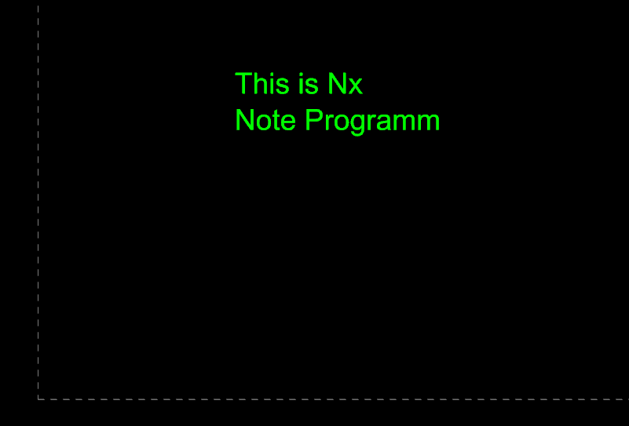

Notes
In UG NX (Unigraphics NX), adding notes is a common practice in the drafting environment to provide additional
information or instructions on a drawing. Notes can include textual information, comments, or specifications that help
communicate design intent or convey important details. Here's how you can add notes in UG NX:
Text Command:
To add a note, you can use the "Text" command. This command allows you to place text at a specific location on the
drawing sheet. You can access the Text command from the drafting toolbar or menu.
Text Styles:
UG NX provides options to define and use different text styles for notes. Text styles include parameters such as font
type, size, and color. You can set up text styles to ensure consistency throughout the drawing.
Leader Lines:
When adding notes, you may want to use leader lines to point to specific areas of the drawing or features. UG NX allows
you to create leader lines to connect the note to the relevant location.
Associativity:
Notes added in UG NX are often associative, meaning they maintain a link to the drawing. If the drawing is updated or
modified, associative notes can be automatically adjusted to reflect the changes.
Note Properties:
After placing a note, you can typically access its properties to make adjustments. This includes modifying the text
content, changing the text style, adjusting the position, and setting other properties related to the appearance of the
note.
Note Library:
UG NX may have a note library feature, allowing you to save and reuse common notes or annotations. This can be a
time-saving feature, especially for notes that are frequently used across different drawings.
Annotations Toolbar:
In the drafting environment, you may find an annotations toolbar that provides quick access to tools for adding various
annotations, including notes. Check the toolbar for specific note-related commands.
Rich Text Format:
UG NX may support rich text formatting for notes, allowing you to add bold, italic, or underline formatting to the text.
This can be useful for emphasizing certain details in the notes.
To add a note, you would typically activate the Text command, click on the drawing sheet to specify the insertion point,
enter the text content, and adjust any additional properties as needed.
Example Code
using NXOpen;
namespace Note
{
public class AddNote
{
public static void Main(string[] args)
{
Session theSession = Session.GetSession();
Part WorkPart = theSession.Parts.Work;
// two line text
string[] nxNote = { "This is Nx", "Note Programm" };
Point3d Location = new Point3d(50, 50, 0);
NXOpen.Annotations.Note Text = WorkPart.Annotations.CreateNote(nxNote, Location, AxisOrientation.Horizontal, null, null);
Text.Layer = 41;
}
public static int GetUnloadOption(string args)
{
return (int)NXOpen.Session.LibraryUnloadOption.Immediately;
}
}
}
